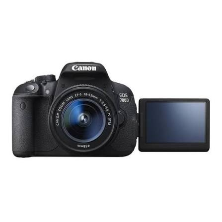

Sobre nosotros
Somos un espacio dedicado a la fotografía con cámaras Canon, creado por y para amantes de la imagen. Compartimos información, reseñas y consejos para ayudarte a sacar el máximo provecho de tu equipo.
Aprendiendo sobre fotografía
Este sitio web fue creado con fines educativos para compartir información básica sobre el mundo de la fotografía y sus diferentes posibilidades.
Nuestro objetivo es aprender los fundamentos de la fotografía y comprender cómo una imagen puede comunicar ideas, emociones y experiencias.
Nuestra misión
Acercar información clara y confiable sobre las cámaras Canon, para que cualquier persona pueda elegir el modelo adecuado según su nivel y presupuesto.
Nuestros valores
Pasión por la fotografía, honestidad en las recomendaciones y cercanía con la comunidad de usuarios Canon.

Consejos para mejorar tus fotografías
- Conoce las funciones de tu cámara.
- Practica diferentes tipos de composición.
- Aprende a utilizar la iluminación.
- Experimenta con diferentes ángulos.
- Observa y analiza tus fotografías.